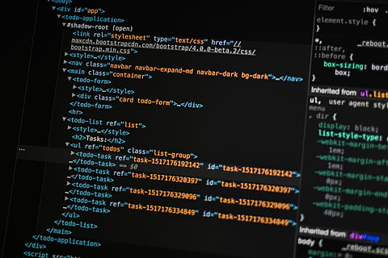

Hojas de estilo en cascada
Las hojas de estilo en cascada o (Cascading Style Sheets, o sus siglas CSS) hacen referencia a un lenguaje de hojas de estilos usado para describir la presentación semántica (el aspecto y formato) de un documento escrito en lenguaje de marcas. Su aplicación más común es dar estilo a páginas webs escritas en lenguaje HTML y XHTML, pero también puede ser aplicado a cualquier tipo de documentos XML, incluyendo SVG y XUL.
Durango, A. (2015). Diseño Web con CSS: 2ª Edición. IT Campus Academy.Frameworks CSS

Frameworks del lenguaje CSS Debido a que las estructuras CSS son complicadas surgen los frameworks que ayudan a facilitar el desarrollo de las aplicaciones. En la actualidad existen gran variedad de frameworks de CSS. Se seleccionaron los frameworks más utilizados con el fin de evaluar las características, ventajas, desventajas, alcances y limitaciones. La lista siguiente corresponde a los frameworks seleccionados para este estudio teniendo en cuenta los artículos encontrados: * 960 Grid System * Blueprint CSS
Aponte, Á. MV (2014). Guía comparativa de Frameworks para los lenguajes HTML 5, CSS y JavaScript para el desarrollo de aplicaciones Web (Tesis doctoral, Universidad Tecnológica de Pereira. Facultad de Ingenierías Eléctrica, Electrónica, Física y Ciencias de la Computación. Ingeniería de Sistemas y Computación).